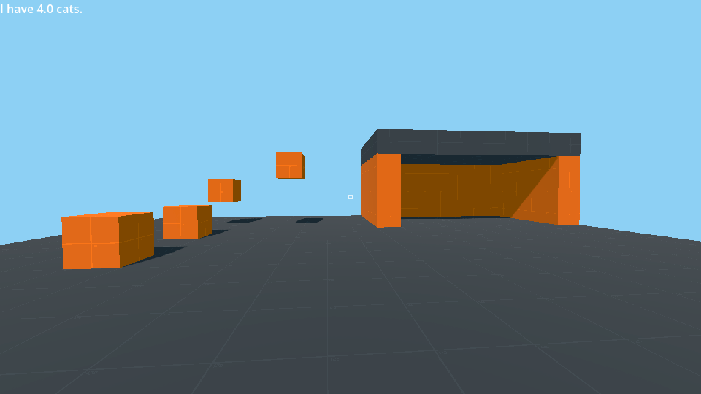
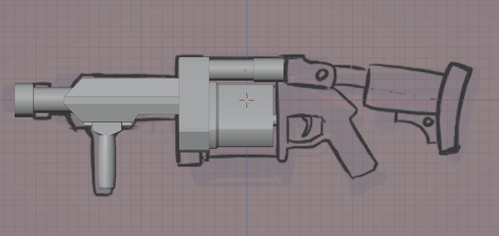
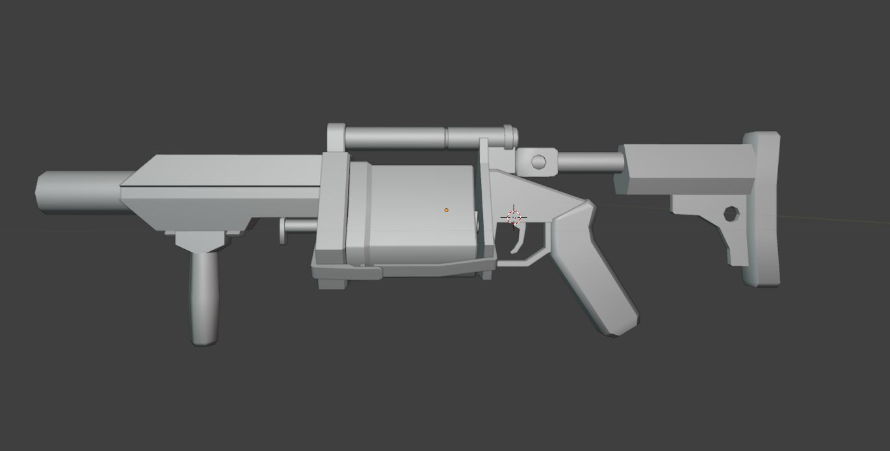
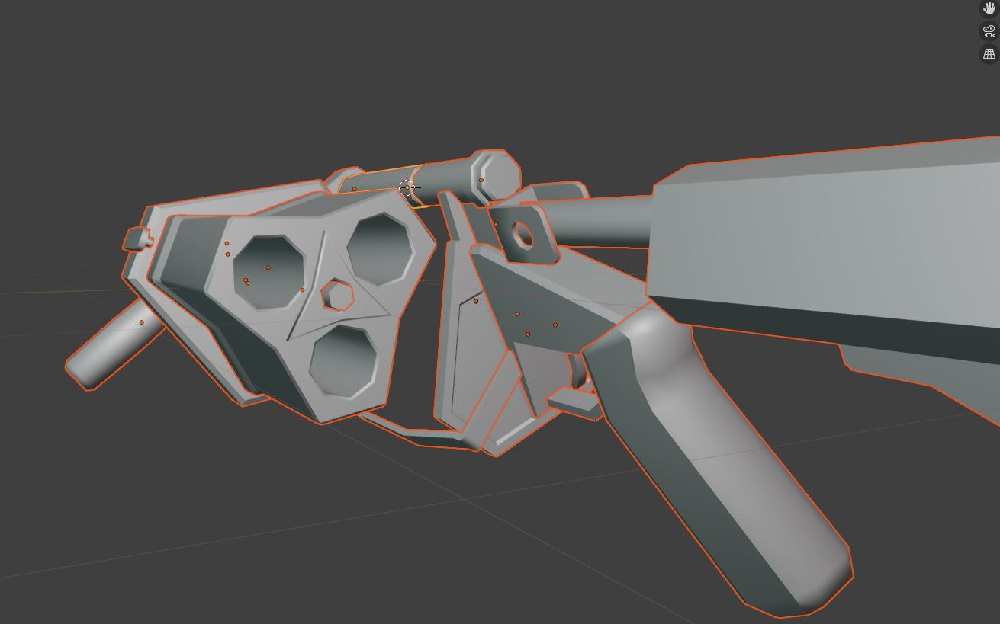

Devblog: Start of "Grenade Jumper" Game

Today I proudly present to you this! I hear you, and you're right, yes that is a 3D level right there mhm mhm! There's even some boxes and a little house where someone can live maybe. Alright, it's not much at the moment, but I'm very proud of it as it's my first real 3D game, and I'm excited to work more on it.
So far, the player is able to walk around, jump, sneak and zoom the camera. My plan is to make this into a fun little parkour game. I was inspired after building a small parkour tower in Minecraft and found it quite fun to climb it (and fall a bunch of times). I thought it would be a good idea for a first game in a 3D game engine as it won't require too many features.
I'm also a big fan of the movement in Valve games (Derived from the original Quake engine) and love bunny hopping and advanced movement tech. So I've spent the last two days figuring out how to implement that into my game. Thanks to Andrei Neacsu's blog post for showing how to implement it in Godot, and thanks as well to zweek's video on YouTube for teaching me how it works in the first place.
And yeah I've also worked a bit on a grenade launcher that the player will be able to use for jumping around and hopefully be able to fend off enemies with it in the future as well. Here's the model so far.



March 15, 2026
/panca